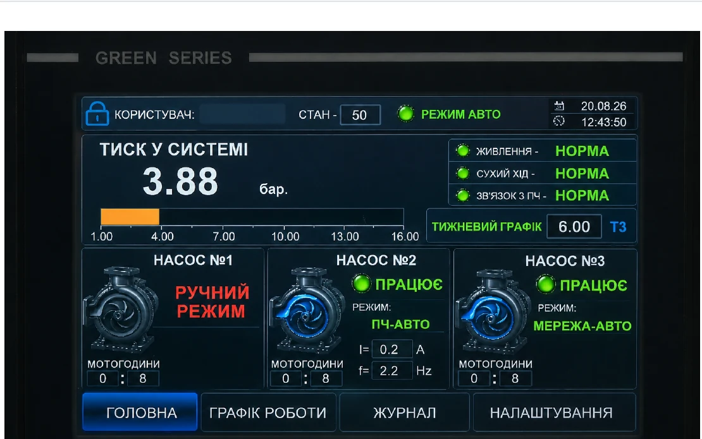
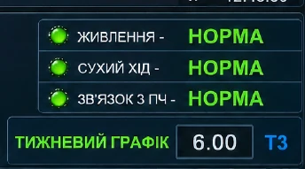
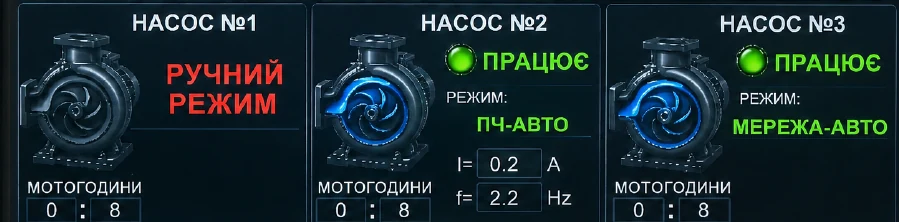
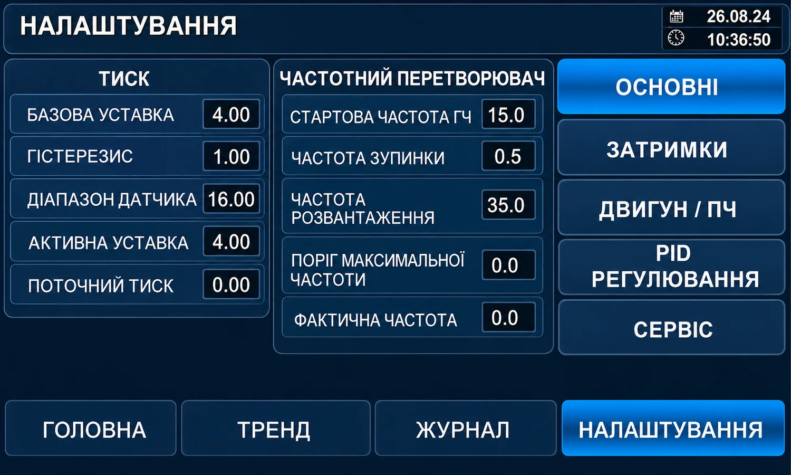
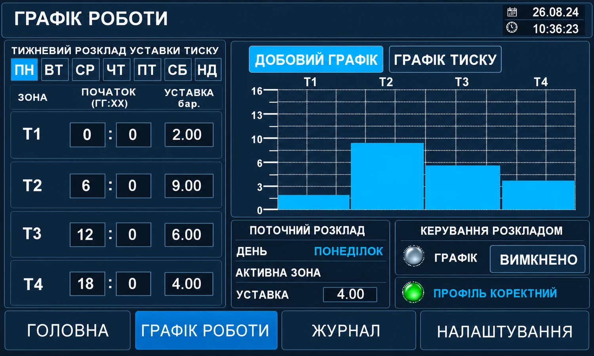
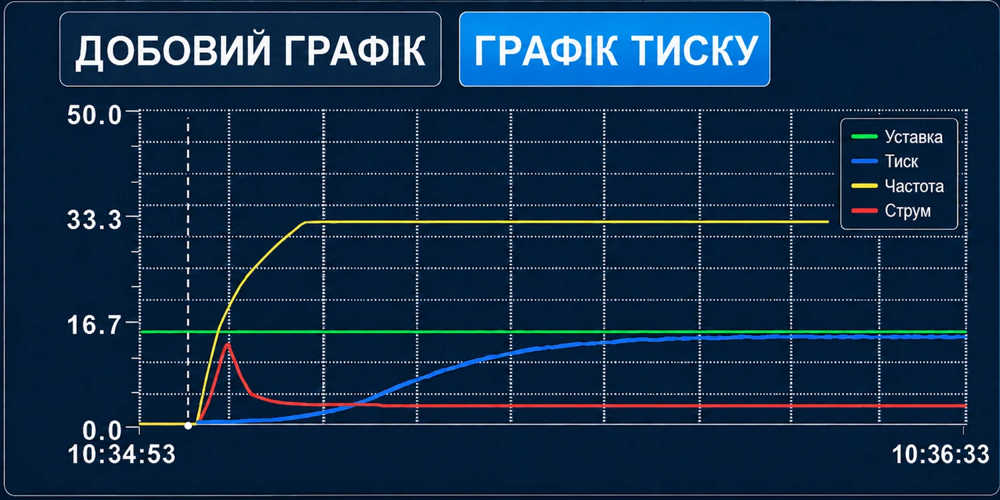
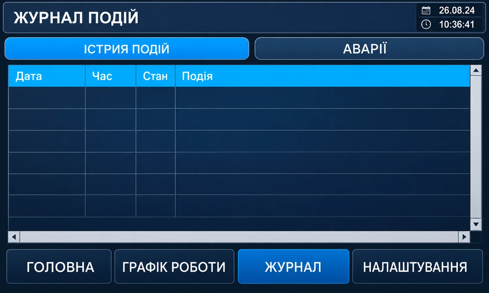
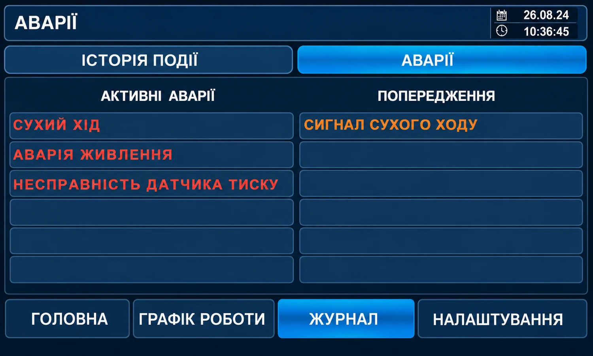

ЖИВЛЕННЯ
НОРМАЗа іншого стану перевірити активні аварії та живлення.
Виберіть екран HMI та натискайте виділені об’єкти. Праворуч відображається призначення, значення для оператора, рівень доступу та пов’язана процедура.

Стислий регламент щоденного контролю HMI. Для детального ознайомлення з екранами, об’єктами та параметрами використовуйте інтерактивну модель інтерфейсу.
П’ять ознак, які оператор оцінює перед роботою.
За іншого стану перевірити активні аварії та живлення.
Якщо активний — не форсувати запуск; перевірити наявність води.
За втрати зв’язку перейти до журналу та передати інформацію в сервіс.
«ПОМИЛКА РЕЖИМІВ» або «НАСОС НЕ АКТИВНИЙ» потребують перевірки.
Порівнювати фактичний тиск саме з активною уставкою.
Що перевірити до автоматичного запуску.
Шафа ввімкнена, активної аварії живлення немає.
Вода є, захист сухого ходу не активний.
Потрібні насоси переведені в положення «Авто».
Дані оновлюються, зв’язок із ПЧ нормальний, аварійні повідомлення відсутні.
Контролювати відповідність станів HMI фактичній роботі насосів і тиску.

Основна сторінка постійного контролю.
Порівнюйте з активною уставкою, а не з випадковим бажаним значенням.
Значення, яке автоматика реально використовує в поточний момент.
Під час роботи на ПЧ контролюйте струм двигуна та вихідну частоту.
Живлення, сухий хід та зв’язок з ПЧ не повинні сигналізувати проблему.
Спочатку читайте текст стану, потім режим. Колір — лише допоміжний.

Насос у АВТО і доступний системі, але зараз не запущений.
Дія: очікувати автоматичного запуску.Насос працює від перетворювача частоти.
Дія: контролювати тиск, f та I.Насос працює від мережі як ступінь каскаду.
Дія: контролювати тиск і каскад.Насос працює поза автоматичним керуванням.
Дія: перевірити фізичний перемикач і причину.Насос не бере участі у штатній автоматичній роботі.
Дія: врахувати зменшення доступної продуктивності.Зафіксований несумісний стан керування насосом.
Дія: не повторювати пуски; перевірити перемикачі та журнал.Оператор змінює лише дозволені робочі параметри.

Для оператора — контроль поточного профілю. Редагування виконується лише відповідно до наданих прав.

| Що дивитися | Нормальна ознака |
|---|---|
| ДЕНЬ | Відповідає поточному дню. |
| АКТИВНА ЗОНА | T1–T4 змінюється у задані моменти. |
| УСТАВКА | Відповідає значенню активної зони. |
| ПРОФІЛЬ КОРЕКТНИЙ | Профіль прийнятий системою як коректний. |
Тренд відповідає на питання «як система змінювалася у часі».

Чи наближається до активної уставки та чи немає тривалого відхилення.
Чи відповідає поточному режиму або зоні тижневого графіка.
Чи змінюється регулювальний вплив відповідно до потреби системи.
Нетипові зміни порівнюйте з частотою, станами насосів і журналом.
Відновлення послідовності того, що відбулося.

Коли сталася зупинка або зміна режиму.
Дивитися хронологічну послідовність.
Режим сну або каскад не є аварією самі по собі.
Зафіксувати час, PV, SP, f/I та текст ключової події.
Скидання — тільки після усунення причини.

Відкрити «ЖУРНАЛ → АВАРІЇ».
Сухий хід, живлення, датчик тиску або інший підтверджений стан.
Не виконувати скидання, поки вона активна.
Виконати штатну команду «СКИНУТИ АВАРІЮ».
Якщо аварія повернулась — повторні скидання припинити.
Штатні переходи, у які оператор не повинен втручатися ручним керуванням.
ПЧ регулює продуктивність насоса для підтримання активної уставки.
1 × МЕРЕЖА-АВТО + 1 × ПЧ-АВТО. Контролювати тиск, не перемикати насоси вручну.
2 × МЕРЕЖА-АВТО + 1 × ПЧ-АВТО. Контролювати тиск та відсутність аварій.
При зменшенні потреби автоматика сама зменшує кількість працюючих насосів.
Штатна автоматична зупинка при малій або відсутній потребі у водоподачі.
ПЧ плавно знижує частоту до безпечного завершення зупинки. Не втручатися.
Захисний стан. Принципово відрізняється від режиму сну.
Після підтвердження сухого ходу робота насосної групи припиняється. Кількість автоматичних спроб відновлення обмежена.
Не орієнтуватися лише на бажання запустити систему.
Зафіксувати час і текст повідомлення.
Не виконувати багаторазове ручне скидання.
Проконтролювати штатний запуск. Якщо автоспроби вичерпані — усунути причину та виконати штатне скидання.
Припинити спроби і передати систему в сервіс.
Спочатку ознака → перша перевірка → подальша дія.
Перша перевірка: PV, SP і журнал на подію переходу в режим сну.
Дія: якщо режим сну підтверджено — дочекатися автоматичного виходу при зниженні тиску.
Перша перевірка: фізичний режим АВТО, живлення, сухий хід, зв’язок із ПЧ, активні аварії, достовірність тиску.
Дія: перевірити журнал і доступність насоса. «ПОМИЛКА РЕЖИМІВ» — спочатку перевірити перемикачі.
Перша перевірка: частота ПЧ, стан ПЧ-АВТО, склад працюючих насосів, сухий хід та аварії.
Дія: якщо всі доступні насоси працюють, але тиск не відновлюється — зафіксувати дані й передати в сервіс.
Перша перевірка: індикатор «ЗВ’ЯЗОК З ПЧ» і журнал.
Для сервісу: стан Modbus 60 — помилка читання; 110 — помилка запису. Оператор не змінює комунікаційні параметри.
Означає: умова несправності залишається активною або повторно фіксується.
Дія: не виконувати багаторазове скидання; перевірити журнал та передати інформацію відповідальному працівнику.
Означає: несумісний стан керування насосом.
Дія: не продовжувати пуски; перевірити фізичні перемикачі та журнал.
Означає: насос не бере участі у штатній автоматичній роботі.
Дія: врахувати зменшення резерву; при потребі максимальної продуктивності повідомити відповідального працівника.
Після цього оператор не виконує повторні пуски або скидання.